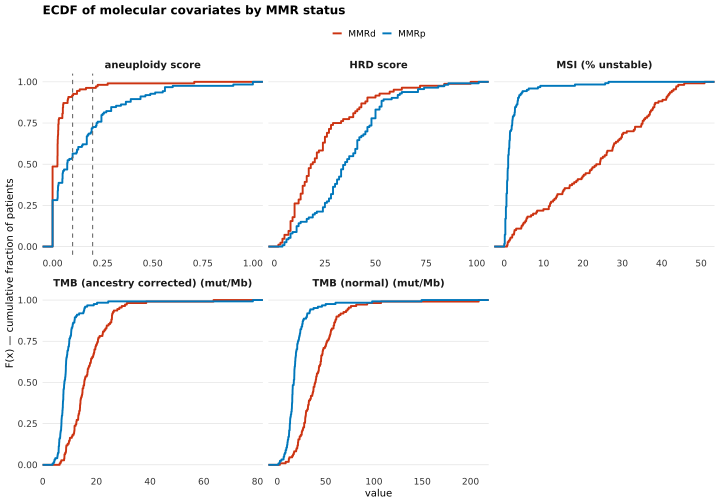
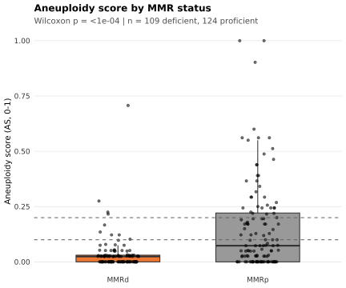

Last updated: 2026-08-13
Checks: 7 0
Knit directory:
attend_aneuploidy/analysis/
This reproducible R Markdown analysis was created with workflowr (version 1.7.2). The Checks tab describes the reproducibility checks that were applied when the results were created. The Past versions tab lists the development history.
Great! Since the R Markdown file has been committed to the Git repository, you know the exact version of the code that produced these results.
Great job! The global environment was empty. Objects defined in the global environment can affect the analysis in your R Markdown file in unknown ways. For reproduciblity it’s best to always run the code in an empty environment.
The command set.seed(20260622) was run prior to running
the code in the R Markdown file. Setting a seed ensures that any results
that rely on randomness, e.g. subsampling or permutations, are
reproducible.
Great job! Recording the operating system, R version, and package versions is critical for reproducibility.
Nice! There were no cached chunks for this analysis, so you can be confident that you successfully produced the results during this run.
Great job! Using relative paths to the files within your workflowr project makes it easier to run your code on other machines.
Great! You are using Git for version control. Tracking code development and connecting the code version to the results is critical for reproducibility.
The results in this page were generated with repository version 1592d06. See the Past versions tab to see a history of the changes made to the R Markdown and HTML files.
Note that you need to be careful to ensure that all relevant files for
the analysis have been committed to Git prior to generating the results
(you can use wflow_publish or
wflow_git_commit). workflowr only checks the R Markdown
file, but you know if there are other scripts or data files that it
depends on. Below is the status of the Git repository when the results
were generated:
Ignored files:
Ignored: .Rhistory
Ignored: .Rproj.user/
Ignored: data/aneu_scores.csv
Ignored: data/attend_barcodes.csv
Ignored: data/attend_data.xlsx
Ignored: data/clinical_gianlu_data.csv
Ignored: data/cnv_annotations/
Ignored: data/gistic/
Ignored: data/hrd_scores.csv
Ignored: data/msi_scores.csv
Ignored: data/old_gistic/
Ignored: data/seg/
Ignored: data/tcga_2013/
Ignored: data/tmb_scores.csv
Ignored: data/variant_annotations/
Ignored: output/clean_data/
Unstaged changes:
Modified: .gitignore
Note that any generated files, e.g. HTML, png, CSS, etc., are not included in this status report because it is ok for generated content to have uncommitted changes.
These are the previous versions of the repository in which changes were
made to the R Markdown (analysis/03-covariates-by-mmr.Rmd)
and HTML (docs/03-covariates-by-mmr.html) files. If you’ve
configured a remote Git repository (see ?wflow_git_remote),
click on the hyperlinks in the table below to view the files as they
were in that past version.
| File | Version | Author | Date | Message |
|---|---|---|---|---|
| Rmd | 1592d06 | bolt3x | 2026-08-13 | :sparkles: Add report 06-response, fix duplicate chunk labels, renumber 07-09 |
| Rmd | 809ba92 | bolt3x | 2026-08-13 | :recycle: Hyphenate every report filename and fix the source-code link |
Question. Do the continuous molecular covariates differ in distribution between MMR-deficient and MMR-proficient tumours? Cohort. All 245 patients on the master; each panel drops its own missing values. Reads. attend_master_joined only. Out of scope. Anything conditioned on aneuploidy class -> reports 05 to 08. Survival -> 04-survival.
Whole distributions, not group averages. The expected differences here are tail phenomena: MMR-deficient tumours carry higher TMB and MSI through a hypermutated subset rather than a uniform shift, which an ECDF shows plainly and a median hides.
An empirical cumulative distribution function plots, for every value on the x-axis, the fraction of patients at or below it. The curve rises from 0 to 1 left to right; where the two curves separate says where in the range the groups differ, a curve further right means systematically higher values, and the largest vertical gap between them is the KS statistic D tested below.
Covariates are mapped to readable labels here, and only those actually present on the master are kept, so a covariate that failed to join is dropped rather than drawn empty. MMR status is attend_cols$mmr_status, collapsed to deficient (Deficient) versus everything else non-missing.
# continuous covariates (prefixed master columns) -> readable labels
covar_map <- c(
"aneuploidy score" = attend_cols$aneuploidy, # aneu__aneuploidy_score
"HRD score" = attend_cols$hrd, # hrd__HRD_Score
"MSI (% unstable)" = "msi__MSI_SCORE"
)
# The two TMB definitions, under their reader-facing names. tmb_defs_present() returns
# normal first, then ancestry corrected (only if it is on the master), so this cannot
# drift from the TMB panels in any other report.
tmb_defs06 <- tmb_defs_present(master)
tmb_map <- setNames(unname(tmb_defs06), paste0(tmb_def_labels(tmb_defs06), " (mut/Mb)"))
covar_map <- c(covar_map, tmb_map)
covar_map <- covar_map[covar_map %in% names(master)] # keep only those present
mmr_col <- attend_cols$mmr_status # gianlu__MMR_STATUS
cat("covariates available:", paste(names(covar_map), collapse = ", "), "\n")covariates available: aneuploidy score, HRD score, MSI (% unstable), TMB (normal) (mut/Mb), TMB (ancestry corrected) (mut/Mb) One panel per covariate. Each curve is a group’s cumulative distribution; the x-axis is the covariate’s own scale (panels are free-scaled, so they are not comparable to each other). Patients missing a value are dropped from that panel only, so panel denominators differ — the KS table below reports each panel’s group sizes.
if (length(covar_map) > 0 && mmr_col %in% names(master)) {
long <- master |>
transmute(
MMR = case_when(
.data[[mmr_col]] == attend_levels$mmr_deficient ~ "MMR deficient",
!is.na(.data[[mmr_col]]) ~ "MMR proficient",
TRUE ~ NA_character_),
across(all_of(unname(covar_map)), ~ suppressWarnings(as.numeric(.x)))
) |>
pivot_longer(all_of(unname(covar_map)), names_to = "covariate", values_to = "value") |>
mutate(covariate = names(covar_map)[match(covariate, covar_map)]) |>
filter(!is.na(MMR), !is.na(value))
ggplot(long, aes(value, colour = MMR)) +
stat_ecdf(linewidth = 0.9) +
facet_wrap(~ covariate, scales = "free_x") +
# colours are the shared attend_mmr_cols (proficient grey / deficient orange)
scale_colour_manual(values = attend_mmr_cols) +
labs(title = "ECDF of molecular covariates by MMR status",
x = "value", y = "F(x) — cumulative fraction of patients", colour = NULL) +
attend_theme() +
theme(legend.position = "top")
} else {
message("No covariate columns or the MMR column are present in the master.")
}
The formal counterpart to the figure. The two-sample KS test asks whether the two distributions differ anywhere, without assuming a shape or testing only the mean. D is the largest vertical gap between the two curves above — so the test statistic is literally the thing the eye picks out of the plot.
n_deficient and n_proficient are that covariate’s own group sizes after dropping missing values, which is why they vary between rows.
No multiple-testing correction is applied across the covariates listed. With a handful of pre-specified covariates that is defensible, but the p-values are per-covariate and should be read that way. Note also that the two TMB rows are not independent — they are the same patients under two definitions — so they cannot be treated as two separate pieces of evidence.
if (length(covar_map) > 0 && mmr_col %in% names(master)) {
mmr <- case_when(
master[[mmr_col]] == attend_levels$mmr_deficient ~ "deficient",
!is.na(master[[mmr_col]]) ~ "proficient",
TRUE ~ NA_character_)
imap_dfr(covar_map, function(col, label) {
d <- tibble(x = suppressWarnings(as.numeric(master[[col]])), mmr = mmr) |>
filter(!is.na(x), !is.na(mmr))
g <- split(d$x, d$mmr)
if (length(g) == 2) {
kt <- suppressWarnings(ks.test(g[["deficient"]], g[["proficient"]]))
tibble(covariate = label,
n_deficient = length(g[["deficient"]]), n_proficient = length(g[["proficient"]]),
D = round(unname(kt$statistic), 3), p = signif(kt$p.value, 3))
} else {
tibble(covariate = label, n_deficient = NA_integer_, n_proficient = NA_integer_,
D = NA_real_, p = NA_real_)
}
})
}# A tibble: 5 × 5
covariate n_deficient n_proficient D p
<chr> <int> <int> <dbl> <dbl>
1 aneuploidy score 109 124 0.412 0.00000000567
2 HRD score 84 113 0.422 0.0000000173
3 MSI (% unstable) 110 124 0.818 0
4 TMB (normal) (mut/Mb) 110 124 0.662 0
5 TMB (ancestry corrected) (mut/Mb) 110 124 0.681 0 The ECDF above shows the whole aneuploidy distribution; this is the same comparison as a two-group contrast with a test attached, because aneuploidy is this pipeline’s subject and the ECDF alone gives no effect size or p-value. Aneuploidy score is aneu__aneuploidy_score (ASCETS arm-level SCNA burden from data/ascets/, LOWCOV arms excluded from each sample’s denominator); the dashed line is the 0.1 class cutoff, drawn so the boxes can be read against the split the later reports use. Wilcoxon rank-sum on the two groups, uncorrected.
aneu_col <- attend_cols$aneuploidy
if (aneu_col %in% names(master) && mmr_col %in% names(master)) {
am <- master |>
transmute(
MMR = case_when(
.data[[mmr_col]] == attend_levels$mmr_deficient ~ "MMR deficient",
!is.na(.data[[mmr_col]]) ~ "MMR proficient",
TRUE ~ NA_character_),
aneuploidy = suppressWarnings(as.numeric(.data[[aneu_col]]))) |>
filter(!is.na(MMR), !is.na(aneuploidy))
p_lab <- tryCatch({
grp <- split(am$aneuploidy, am$MMR)
if (length(grp) == 2)
sprintf("Wilcoxon p = %s | n = %d deficient, %d proficient",
format.pval(wilcox.test(grp[[1]], grp[[2]])$p.value, digits = 2, eps = 1e-4),
length(grp[["MMR deficient"]]), length(grp[["MMR proficient"]]))
else NULL
}, error = function(e) NULL)
ggplot(am, aes(MMR, aneuploidy, fill = MMR)) +
geom_boxplot(outlier.shape = NA, width = 0.6, alpha = 0.6) +
geom_jitter(width = 0.15, size = 0.8, alpha = 0.5) +
geom_hline(yintercept = attend_thresholds$aneuploidy, linetype = 2, colour = "grey40") +
scale_fill_manual(values = attend_mmr_cols) +
labs(title = "Aneuploidy score by MMR status",
subtitle = p_lab, x = NULL, y = "aneuploidy score") +
attend_theme() + theme(legend.position = "none")
} else {
message("Need ", aneu_col, " and ", mmr_col, " on the master for the aneuploidy contrast.")
}
sessionInfo()R version 4.3.2 (2023-10-31)
Platform: x86_64-pc-linux-gnu (64-bit)
Running under: Rocky Linux 9.5 (Blue Onyx)
Matrix products: default
BLAS/LAPACK: FlexiBLAS OPENBLAS; LAPACK version 3.11.0
locale:
[1] LC_CTYPE=C.UTF-8 LC_NUMERIC=C LC_TIME=C.UTF-8
[4] LC_COLLATE=C.UTF-8 LC_MONETARY=C.UTF-8 LC_MESSAGES=C.UTF-8
[7] LC_PAPER=C.UTF-8 LC_NAME=C LC_ADDRESS=C
[10] LC_TELEPHONE=C LC_MEASUREMENT=C.UTF-8 LC_IDENTIFICATION=C
time zone: Europe/Rome
tzcode source: system (glibc)
attached base packages:
[1] stats graphics grDevices utils datasets methods base
other attached packages:
[1] data.table_1.18.4 fs_2.1.0 readxl_1.5.0 here_1.0.2
[5] lubridate_1.9.5 forcats_1.0.1 stringr_1.6.0 dplyr_1.2.1
[9] purrr_1.0.2 readr_2.2.0 tidyr_1.3.2 tibble_3.3.1
[13] ggplot2_4.0.3 tidyverse_2.0.0
loaded via a namespace (and not attached):
[1] utf8_1.2.6 sass_0.4.10 generics_0.1.4 stringi_1.8.7
[5] hms_1.1.4 digest_0.6.39 magrittr_2.0.5 timechange_0.4.0
[9] evaluate_1.0.5 grid_4.3.2 RColorBrewer_1.1-3 fastmap_1.2.0
[13] cellranger_1.1.0 rprojroot_2.1.1 workflowr_1.7.2 jsonlite_2.0.0
[17] whisker_0.4.1 promises_1.5.0 scales_1.4.0 jquerylib_0.1.4
[21] cli_3.6.6 crayon_1.5.3 rlang_1.2.0 bit64_4.0.5
[25] withr_3.0.2 cachem_1.1.0 yaml_2.3.12 otel_0.2.0
[29] parallel_4.3.2 tools_4.3.2 tzdb_0.5.0 httpuv_1.6.12
[33] vctrs_0.7.3 R6_2.6.1 lifecycle_1.0.5 git2r_0.33.0
[37] bit_4.6.0 vroom_1.7.1 pkgconfig_2.0.3 pillar_1.11.1
[41] bslib_0.9.0 later_1.4.8 gtable_0.3.6 glue_1.8.1
[45] Rcpp_1.1.1-1.1 xfun_0.58 tidyselect_1.2.1 rstudioapi_0.15.0
[49] knitr_1.51 dichromat_2.0-0.1 farver_2.1.2 htmltools_0.5.9
[53] labeling_0.4.3 rmarkdown_2.31 compiler_4.3.2 S7_0.2.2
sessionInfo()R version 4.3.2 (2023-10-31)
Platform: x86_64-pc-linux-gnu (64-bit)
Running under: Rocky Linux 9.5 (Blue Onyx)
Matrix products: default
BLAS/LAPACK: FlexiBLAS OPENBLAS; LAPACK version 3.11.0
locale:
[1] LC_CTYPE=C.UTF-8 LC_NUMERIC=C LC_TIME=C.UTF-8
[4] LC_COLLATE=C.UTF-8 LC_MONETARY=C.UTF-8 LC_MESSAGES=C.UTF-8
[7] LC_PAPER=C.UTF-8 LC_NAME=C LC_ADDRESS=C
[10] LC_TELEPHONE=C LC_MEASUREMENT=C.UTF-8 LC_IDENTIFICATION=C
time zone: Europe/Rome
tzcode source: system (glibc)
attached base packages:
[1] stats graphics grDevices utils datasets methods base
other attached packages:
[1] data.table_1.18.4 fs_2.1.0 readxl_1.5.0 here_1.0.2
[5] lubridate_1.9.5 forcats_1.0.1 stringr_1.6.0 dplyr_1.2.1
[9] purrr_1.0.2 readr_2.2.0 tidyr_1.3.2 tibble_3.3.1
[13] ggplot2_4.0.3 tidyverse_2.0.0
loaded via a namespace (and not attached):
[1] utf8_1.2.6 sass_0.4.10 generics_0.1.4 stringi_1.8.7
[5] hms_1.1.4 digest_0.6.39 magrittr_2.0.5 timechange_0.4.0
[9] evaluate_1.0.5 grid_4.3.2 RColorBrewer_1.1-3 fastmap_1.2.0
[13] cellranger_1.1.0 rprojroot_2.1.1 workflowr_1.7.2 jsonlite_2.0.0
[17] whisker_0.4.1 promises_1.5.0 scales_1.4.0 jquerylib_0.1.4
[21] cli_3.6.6 crayon_1.5.3 rlang_1.2.0 bit64_4.0.5
[25] withr_3.0.2 cachem_1.1.0 yaml_2.3.12 otel_0.2.0
[29] parallel_4.3.2 tools_4.3.2 tzdb_0.5.0 httpuv_1.6.12
[33] vctrs_0.7.3 R6_2.6.1 lifecycle_1.0.5 git2r_0.33.0
[37] bit_4.6.0 vroom_1.7.1 pkgconfig_2.0.3 pillar_1.11.1
[41] bslib_0.9.0 later_1.4.8 gtable_0.3.6 glue_1.8.1
[45] Rcpp_1.1.1-1.1 xfun_0.58 tidyselect_1.2.1 rstudioapi_0.15.0
[49] knitr_1.51 dichromat_2.0-0.1 farver_2.1.2 htmltools_0.5.9
[53] labeling_0.4.3 rmarkdown_2.31 compiler_4.3.2 S7_0.2.2